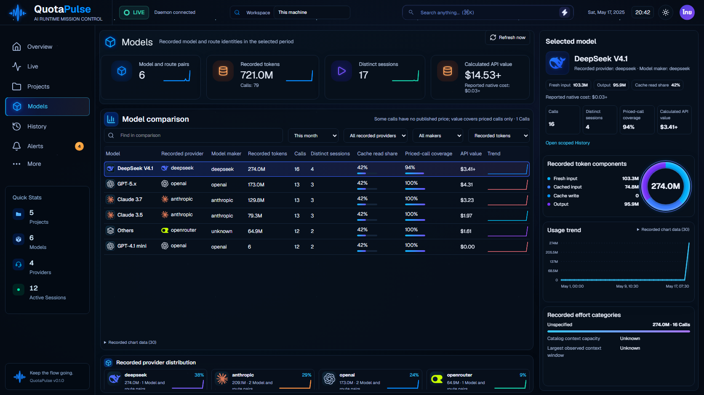

Validation and remaining requirements · Previous comparison
Original Models gate: four exact pairs. Ring regions: eight exact original/native pairs. Native full-page gate remains RED at two Thai-light table pixels. Whole-reference acceptance remains open.
